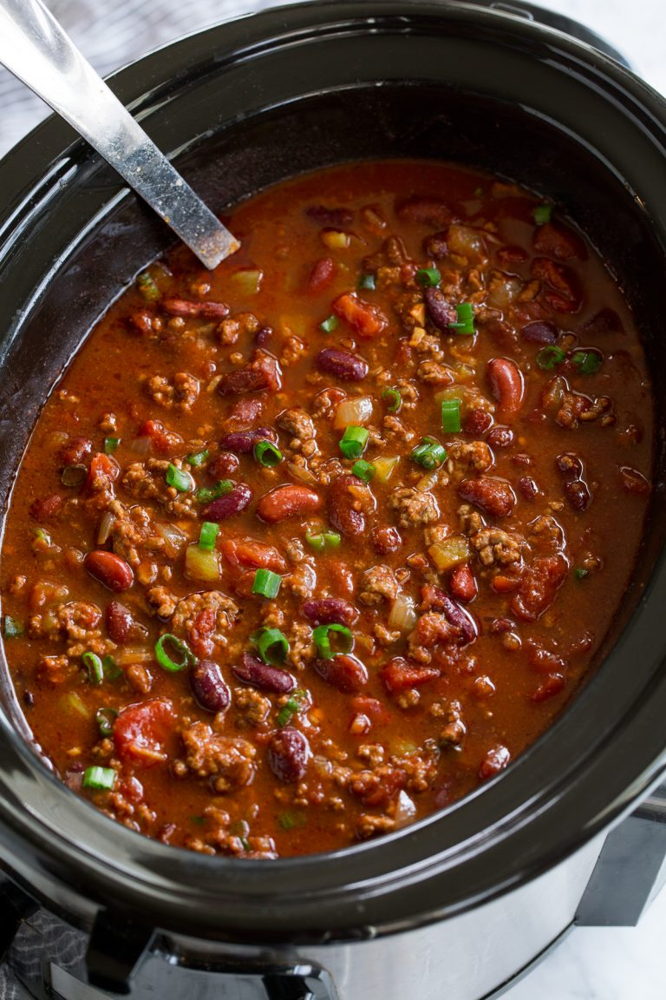

Chili

Description
Chili is actually one of my favorite foods and I make it all the time. It’s a recipe everyone in the family loves and it’s just good for the soul, perfect comfort food. This slow cooker method is my favorite for chili. The flavor of the crockpot chili is rich and robust, the texture of the beef is so tender, and it turns out perfect every time! It’s just the way the ground beef in chili should be. Six hours of slow cooking creates the best chili ever! And have I mentioned how easy this it is to make? It’s a total breeze, so this will likely become a recipe you won’t want to lose!
Ingredients
- Olive oil
- Ground beef
- Yellow onion and garlic
- Canned tomatoes with green chilies
- Tomato sauce
- Beef broth
- Cocoa powder
- Dark and light kidney beans
Steps
- Saute aromatics, add to slow cooker: Heat olive oil in a large and deep non-stick skillet over medium-high heat.
Add onion and saute 3 minutes, then add garlic and saute 30 seconds longer. Pour onions into a 6 or 7 quart slow cooker
- Brown beef: Return skillet to medium-high eat, add beef and cook stirring occasionally until beef has browned.
- Drain fat, add beef to slow cooker: Drain most of fat from beef, leaving about 2 Tbsp in with beef (this is optional, I think it ads flavor but you can drain it all if you’d prefer). Pour browned beef into slow cooker.
- Add liquids and seasonings: Stir in diced tomatoes, tomato sauce, beef broth, chili powder, cumin, paprika, cocoa powder, sugar, coriander and season mixture with salt and pepper to taste.
- Cook low and slow: Cover with lid and cook on low heat for 5 – 6 hours.
- Stir in beans: Add in dark and light red kidney beans and allow to heat through, about 2 minutes
- Serve warm with desired toppings
Home